EJEMPLOS
1. ¿Cuál es el número de aristas del grafo? 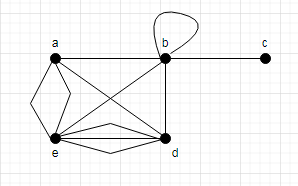
R\. Primero contamos el número de aristas de cada vértice
a= 4, b= 6, c= 1, d= 5, e= 6
Sumamos todas las aristas
4+6+1+5+6= 22
Utilizamos el teorema de Handshaking para saber cuantas aristas tiene el grafo
2e= 22
e= 22/2 = 11
El total de aristas de H son 11.
2. ¿Cuántas aristas hay en un grafo con 10 vértices, cada uno de los cuales tiene grado 6?
R\. Como cada uno de los vértices tiene grado 6, multiplicamos 6 por el número de vértices
2e= 6*10
2e= 60
e= 60/2 = 30
El número total de aristas es 30.
3. ¿Es bipartito el siguiente grafo?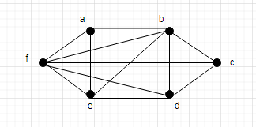R\. Primero intentamos separar en 2 conjuntos los vértices, pero no es posible ya que f, a, y e forman un triángulo, por lo tanto sus vértices no se pueden dividir en 2 subconjuntos de modo que las aristas no conecten ningún par de vértices de un mismo subconjunto.
4. Halla los grados de entrada y salida de cada vértice del grafo dirigido G que se muestra:
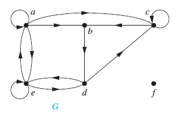
R\. Los grados de entrada del grafo son: S-(a)= 2, S-(b)=2, S-(c)=3, S-(d)=2, S-(e)=3, S-(f)=0
Los grados de salida son: S+(a)=4, S+(b)=1, S+(c)=2, S+(d)=2, S+(e)=3, S+(f)=0
5. Indique si el grafo representado por la siguiente matriz de adyacencia es bipartito.
| a | b | c | d | e | f | g | h | |
| a | 0 | 0 | 1 | 0 | 0 | 0 | 0 | 1 |
| b | 0 | 0 | 0 | 0 | 0 | 0 | 0 | 1 |
| c | 1 | 0 | 0 | 0 | 0 | 0 | 1 | 1 |
| d | 0 | 0 | 0 | 0 | 1 | 0 | 0 | 0 |
| e | 0 | 0 | 0 | 1 | 0 | 1 | 0 | 1 |
| f | 0 | 0 | 0 | 0 | 1 | 0 | 0 | 0 |
| g | 0 | 0 | 1 | 0 | 0 | 0 | 0 | 0 |
| h | 1 | 1 | 1 | 0 | 1 | 0 | 0 | 0 |
R\. Dibujamos el grafo dado por la matriz:
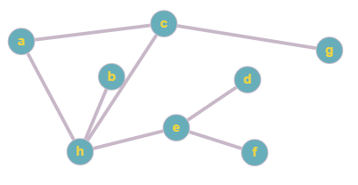
Separamos en dos grupos los vértices donde los vértices del mismo grupo no pueden estar conectados, pero los vértices a, c, h están conectados entre si, por lo que si ponemos a en un grupo, c debe estar en otro y h en otro diferente y solo son 2 grupos por lo tanto no hay forma de que sea un grafo bipartito.
6. Utiliza una matriz de adyacencia para representar el pseudografo que se muestra en la figura.
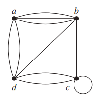
R\. Se crea la matriz contando las aristas de cada vértice,
- De a hacia a no hay ninguna arista, de a hacia b hay 3 aristas, de a hacia c no hay ninguna arista, de a hacia d hay 2 aristas;
- De b hacia a hay 3 aristas, de b hacia b no hay aristas, de b hacia c hay 1 arista, de b hacia d hay 1 arista.
- De c hacia a no hay aristas, de c hacia b hay una arista, de c hacia c hay una arista, de c hacia d hay 2 aristas.
- De d hacia a hay 2 aristas, de d hacia b hay 1 arista, de d hacia c hay 2 aristas, y de d hacia d no hay ninguna arista.
Esto lo representamos en la matriz:
| a | b | c | d | |
| a | 0 | 3 | 0 | 2 |
| b | 3 | 0 | 1 | 1 |
| c | 0 | 1 | 1 | 2 |
| d | 2 | 1 | 2 | 0 |
7. Representa el pseudografo que se muestra en la figura usando una matriz de incidencia
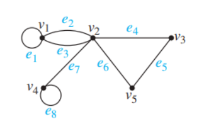
R\. La matriz de incidencia la creamos poniendo un 1 cuando el vértice incide con la arista.
- El v1 incide con la arista e1, e2, e3.
- El v2 incide con la arista e2, e3, e4, e6, e7.
- El v3 incide con la arista e4, e5.
- El v4 incide con la arista e7, e8.
- El v5 incide con la arista e5, e6.
| e1 | e2 | e3 | e4 | e5 | e6 | e7 | e8 | |
| v1 | 1 | 1 | 1 | 0 | 0 | 0 | 0 | 0 |
| v2 | 0 | 1 | 1 | 1 | 0 | 1 | 1 | 0 |
| v3 | 0 | 0 | 0 | 1 | 1 | 0 | 0 | 0 |
| v4 | 0 | 0 | 0 | 0 | 0 | 0 | 1 | 1 |
| v5 | 0 | 0 | 0 | 0 | 1 | 1 | 0 | 0 |
8. ¿Cuáles de los grafos no dirigidos contienen un circuito euleriano? Entre aquellos que no lo contienen, ¿cuáles contienen un camino euleriano?
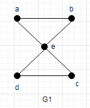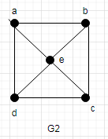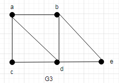
R\. El grafo G1 contiene un circuito euleriano a, e, c, d, e, b, a; ni el grafo G2 ni G3 contienen un circuito euleriano ya que no hay forma de comenzar en un vértice y recorrer todo el grafo sin repetir aristas y llegar al mismo vértice de inicio.
G2 tampoco contiene ningún camino euleriano, y G3 si contiene un camino euleriano a, c, d, e, b, d, a, b.
9. ¿Cuáles de los grafos dirigidos contienen un circuito euleriano? Entre aquellos que no lo contienen, ¿cuáles contienen un camino euleriano?
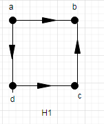 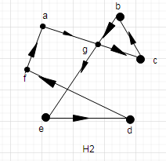 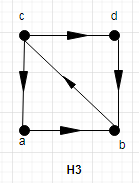
R\. El grafo H1 no contiene un circuito euleriano ya que por ejemplo si salimos de a no podremos volver a llegar a el o del vértice b no es posible salir, el grafo H2 si contiene un circuito euleriano a, g, c, b, g, e, d, f, a; el grafo H3 tampoco contiene un circuito euleriano.
El grafo H1 no contiene un camino euleriano y el grafo H3 si contiene un camino euleriano c, a, b, c, d, b.
10. Alguno de los siguientes grafos contiene un circuito hamiltoniano, en caso de no contenerlo explicar porque.
- 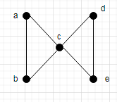 2. 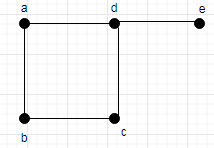
R\. El grafo 1 no tiene un circuito hamiltoniano ya que no es posible salir de un nodo y volver a llegar a él sin repetir ningún vértice, el grafo 2 tampoco contiene ningún circuito hamiltoniano ya que tiene un vértice de grado 1 y si salimos de él no podremos regresar.
11. Determina el número de vértices y aristas, y encuentra en grado de entrada y salida de cada vértice para el multigrafo dirigido:
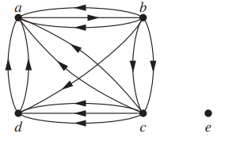
R\. Número de vértices: 5
Número de aristas: 13
S-(a)=6 S+(a)= 1; S-(b)=1 S+(b)=5; S-(c)=2 S+(c)=5; S-(d)=4 S+(d)=2; S-(e)=0 S+(e)=0
12. Encuentra la secuencia de grado de W5
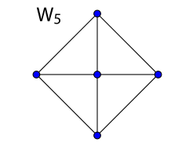
R\. 4,3,3,3,3
13. Dibujar todos los subgrafos de este grafo.
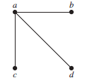
R\.
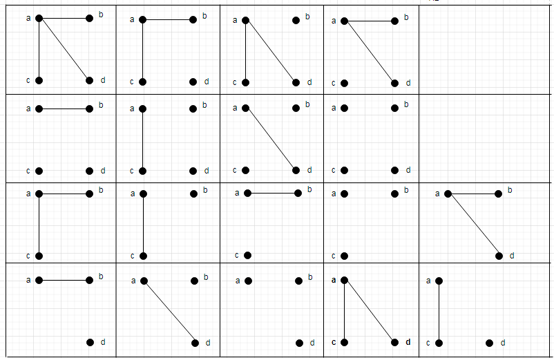
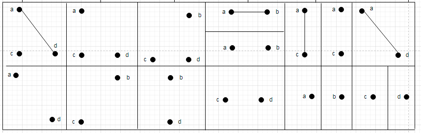
14. Representar el grafo K1,4 con una matriz de adyacencia.
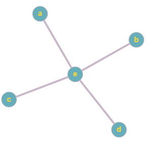
R\.
| 0 | 0 | 0 | 0 | 1 |
| 0 | 0 | 0 | 0 | 1 |
| 0 | 0 | 0 | 0 | 1 |
| 0 | 0 | 0 | 0 | 1 |
| 1 | 1 | 1 | 1 | 0 |
15. ¿Forma un camino esta lista de vértices en el siguiente grafo? ¿Es un camino simple? ¿Es un circuito? ¿Cual es la longitud si es un camino?
- c, b, d, a, e, c
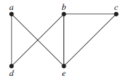
R\. Es un circuito simple de longitud 5.
16. Considere el siguiente dibujo de un grafo:
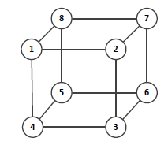
Responda a las siguientes preguntas, justificando su respuesta:
1. ¿Tiene el grafo un Ciclo Hamiltoniano?
2. ¿Tiene el grafo un Circuito de Euler?
3. ¿Es el grafo bipartito?
4. Dibuje el grafo para demostrar que es planar.
5. Dibuje la matriz de adyacencia del grafo.
R\.
1. Sí tiene un Ciclo Hamiltoniano: (1; 2; 3; 4; 5; 6; 7; 8; 1).
2. No tiene un Circuito de Euler, ya que tiene vértices con grado impar.
3. Sí es bipartito, ya que no tiene ciclos de longitud impar.
4. El grafo es planar, una representación que lo deja claro puede verse a continuación:
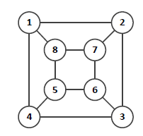
5. La matriz de adyacencia del grafo es:
| 1 | 2 | 3 | 4 | 5 | 6 | 7 | 8 | |
| 1 | 0 | 1 | 0 | 1 | 0 | 0 | 0 | 1 |
| 2 | 1 | 0 | 1 | 0 | 0 | 0 | 1 | 0 |
| 3 | 0 | 1 | 0 | 1 | 0 | 1 | 0 | 0 |
| 4 | 1 | 0 | 1 | 0 | 1 | 0 | 0 | 0 |
| 5 | 0 | 0 | 0 | 1 | 0 | 1 | 0 | 1 |
| 6 | 0 | 0 | 1 | 0 | 1 | 0 | 1 | 0 |
| 7 | 0 | 1 | 0 | 0 | 0 | 1 | 0 | 1 |
| 8 | 1 | 0 | 0 | 0 | 1 | 0 | 1 | 0 |
17. Los datos de matriculación de los alumnos de un curso, compuesto por las ocho asignaturas, i = 1, . . . , 8, indican que las únicas parejas de asignaturas que no tienen simultáneamente alumnos matriculados son a1 y a8, a2 y a8, a1 y a2, a1 y a3, a3 y a4, a5 y a3, a7 y a2.
1. Encontrar un grafo G que represente esta situación y probar que G no es plano.
2. Prescindiendo de dos asignaturas se puede obtener un subgrafo plano G′ del grafo G. Encontrar dichas asignaturas y probar que G′ es plano.
R\.
1. El primer grafo representa la matricula del curso y no es conexo ya que el subgrafo inducido por los vértices {v4, v5, v6, v7, v8} es el grafo completo K5.
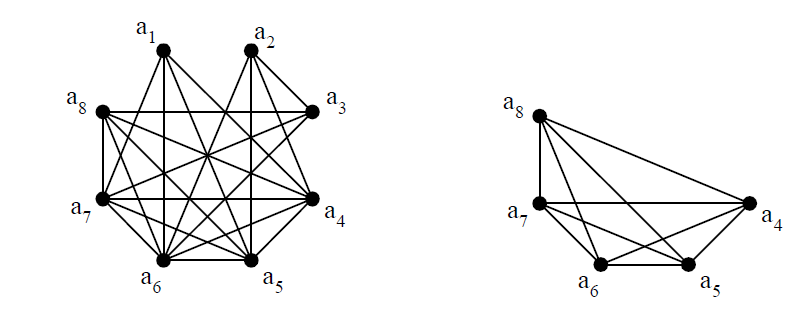
2. El primer grafo es el obtenido al eliminar los vértices correspondientes a las asignaturas a4 y a6 y el segundo es una inmersión plana del mismo.
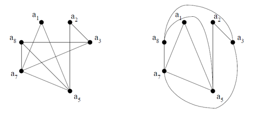
18. Consideremos el siguiente grafo
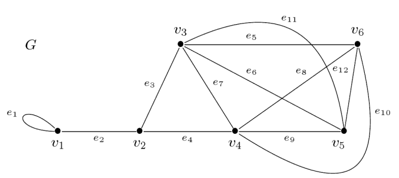
Dibuja, nombrando los vértices y las aristas utilizadas
a. Un subgrafo de G de orden 3 con 4 aristas
b. Un subgrafo de G de orden 4 con 6 aristas
R\.
a.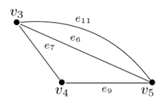
b. 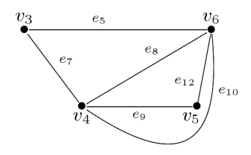
19. Considere el grafo que se muestra a continuación:
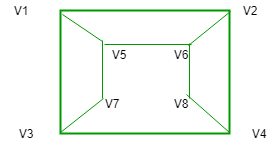
Los dos conjuntos distintos de vértices, que hacen que el grafo sea bipartito, son:
R\. Los dos conjuntos que hacen que el grafo sea bipartito son (v1, v4, v6, v7); (v2, v3, v5, v8) ya que no hay arista que conecte vértices del mismo conjunto.
20. ¿En cuántas regiones está dividido un grafo plano conexo que tiene seis vértices y cada uno de grados cuatro?
R\. 2e= v*4= 6*4= 24
e=24/2 =12
r= 12-6+2= 8, el grafo esta dividido en 8 regiones.
21. Sea el grafo de la figura determine si es bipartito y plano.
R\. El grafo es bipartito ya que pueden separarse los vértices en dos grupos A y B.
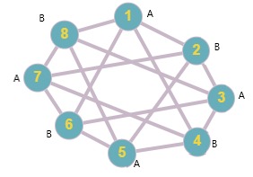
Para definir si es plano debe cumplir las restricciones y así se podría decir que el grafo podría ser plano.
v=8; e=16; r=32-8+2= 26
3r ≤ 2e= r ≤ 21,3= 26 ≤ 10,6 No se cumple
e ≤ 3v-6 = e ≤ 24-6 = e ≤ 18 = 16 ≤ 18 Si se cumple
Como hay una de las restricciones que no se cumple se dice que el grafo no es plano.
Aquí podrás encontrar más ejemplos sobre teoría de grafos:
https://math.libretexts.org/Bookshelves/Combinatorics_and_Discrete_Mathematics/Discrete_Mathematics_(Levin)/4%3A_Graph_Theory/4.E%3A_Graph_Theory_(Exercises)